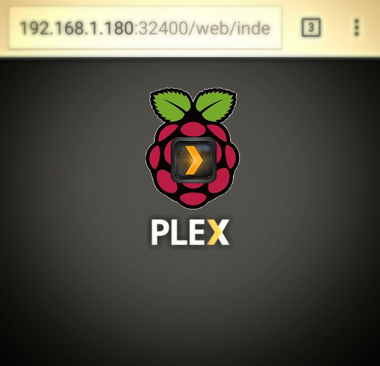
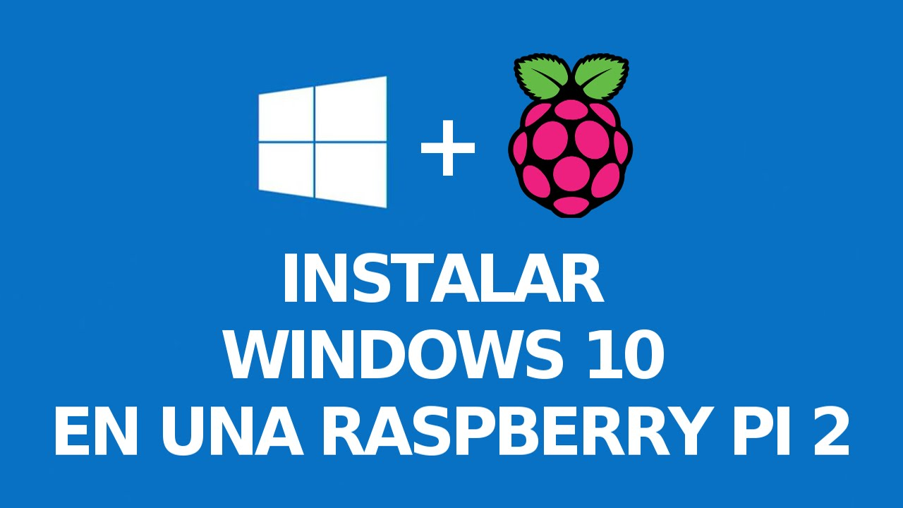
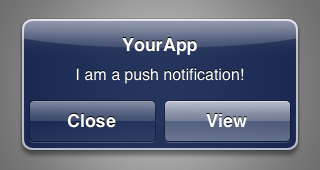

Instalar Plex
Ponte a ver películas en tu Pi

Sin monitor
Trabaja sin monitor en raspberry Pi
IP Privada
Como tener IP privada en Raspberry

Windows 10 ioT
Windows 10 ioT para Raspberry Pi

Notificaciones Push
Notificaciones en tu móvil
WatchApp
WatchApp en Raspberry Pi